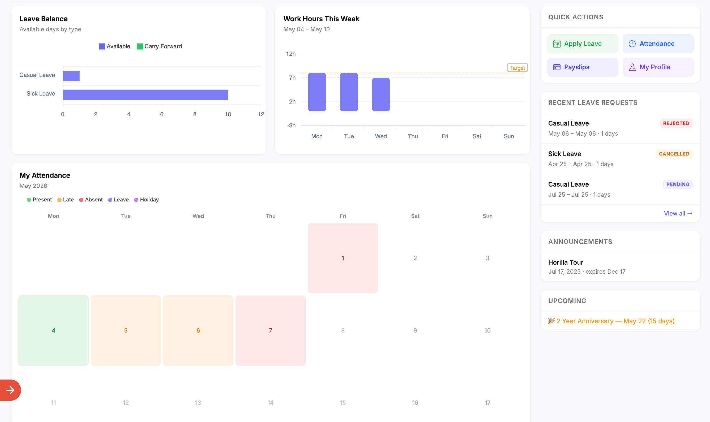
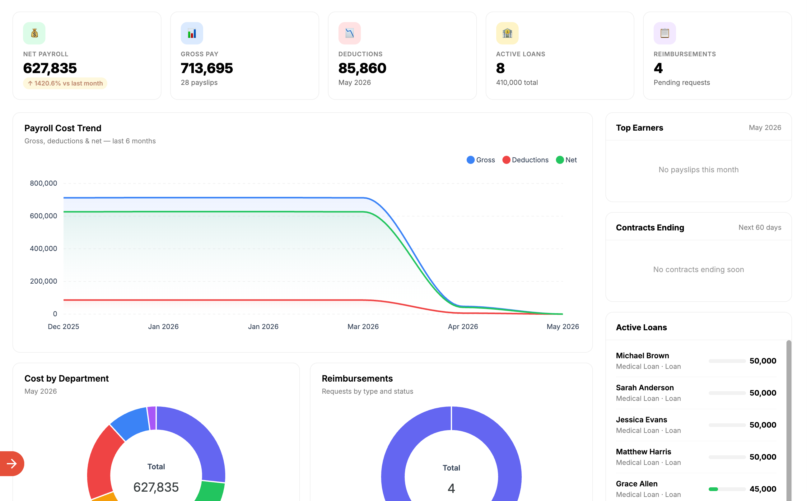
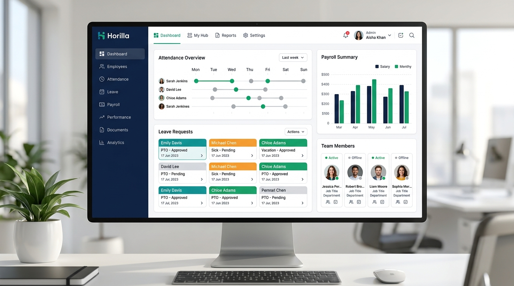
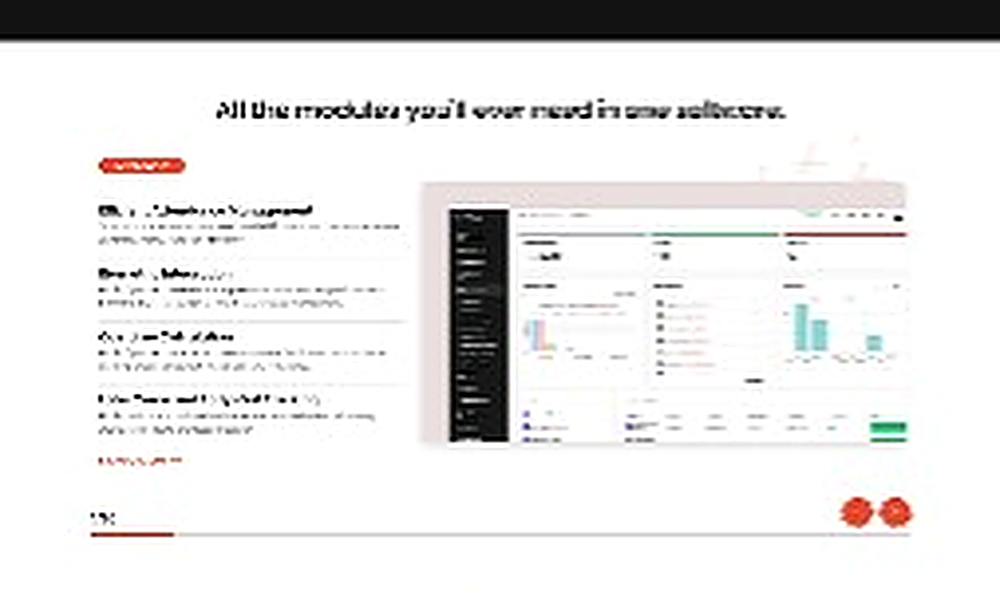
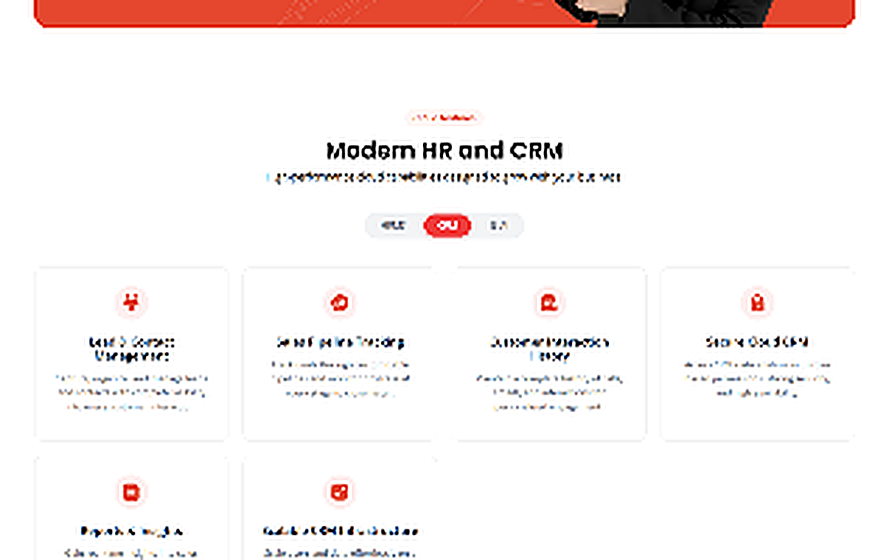

Overview
Horilla is an HR management platform that brings essential people-management and business operations into one connected ecosystem.
My work covered the Horilla HRMS dashboard, CRM dashboard, mobile app, main website, and Horilla Cloud website, focusing on creating clear and consistent experiences across different platforms.
Background
Working across multiple Horilla products required understanding different workflows and adapting the design to each platform while maintaining a consistent visual identity.
The goal was to make complex business information easier to navigate and create a more approachable experience for users.


Design Approach
I worked with the team and developers to understand product requirements and workflows, then translated them into clear interfaces across dashboards, mobile, and web.
My focus was on information hierarchy, intuitive navigation, and a consistent design foundation.

Key Areas
HRMS & CRM Dashboards
Designed dashboard experiences with structured layouts, clear information hierarchy, and accessible actions to support everyday business workflows.
Mobile App
Adapted key product experiences for smaller screens, focusing on usability, navigation, and touch-friendly interactions.
Horilla Website
Designed the main website to present the platform and its capabilities through a clear and approachable digital experience.
Horilla Cloud
Extended the Horilla visual direction into the cloud website, keeping the experience connected to the broader product ecosystem.


Challenges
Multiple Platforms
Designing for dashboards, mobile applications, and websites required adapting layouts and interactions to different contexts.
Complex Workflows
HR and CRM interfaces contain extensive information that needed to remain organized and easy to understand.
Design Consistency
Maintaining a recognizable visual language across different products while addressing their individual requirements was an important challenge.
Outcome
The work established a consistent design direction across Horilla’s dashboards, mobile application, and websites while adapting each experience to its specific purpose.
What I Learned
Horilla strengthened my ability to design across multiple platforms and product experiences.
It taught me how a consistent design foundation can bring different workflows together without compromising the needs of each experience.